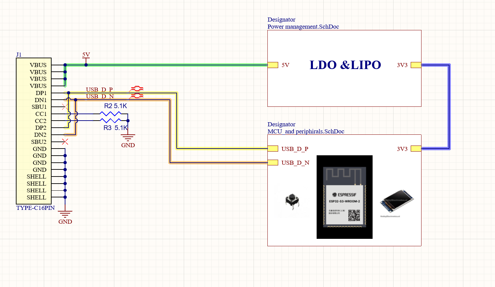
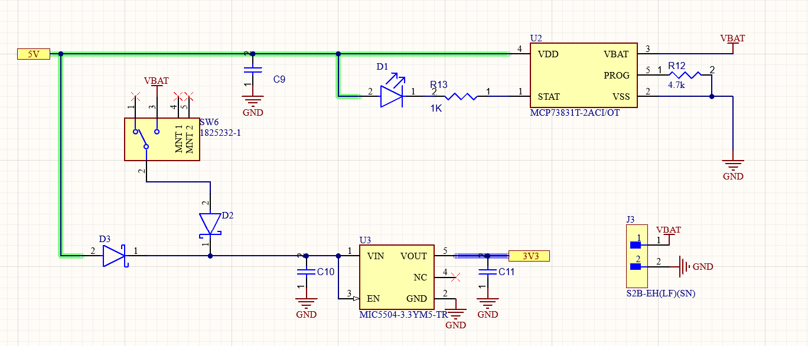
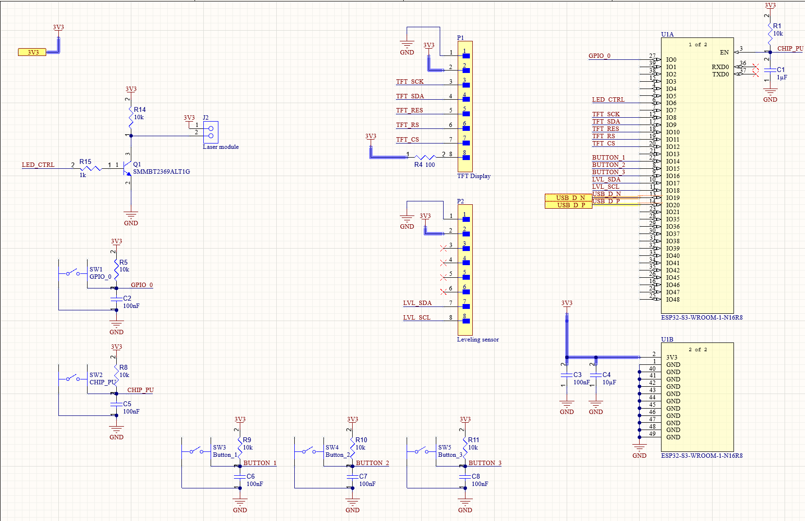

CV Display PCB
A business-card-sized PCB built around an ESP32 that doubles as a portable interactive CV. Displays a paginated CV and QR code on a TFT screen, includes a digital spirit level driven by an accelerometer, a hold-to-fire laser pointer, and a Wi-Fi CV editor that lets the owner update the on-board text from any phone — persisted to flash so it survives a power cycle.
A business card you can interact with
Paper business cards are forgettable. This one isn’t. The CV Display PCB is a self-powered, pocket-sized circuit board that puts an entire interactive CV in someone’s hand — with a TFT screen, three navigation buttons, and a handful of demos that show off both the hardware and the firmware behind it.
Four modes are reachable from the main menu, each designed to be glanceable and self-explanatory without any external setup.
The owner’s CV is word-wrapped to the TFT and split into pages on blank-line boundaries. Buttons step forward/back through the pages.
A 128×128 monochrome QR linking to the online portfolio is drawn from PROGMEM — scan it with any phone to keep the conversation going.
Live roll and pitch readout from the on-board ADXL345 accelerometer, with a dot/line indicator and one-press tare calibration.
A board-mounted laser diode that activates only while the confirm button is held — safety-by-design, no latching state.
Board design in Altium
The V2 design is captured in Altium Designer across three hierarchical schematic sheets: a top-level Main sheet, a Power management block, and an MCU and peripherals block. Splitting the design this way keeps the analog power section visually isolated from the digital bus routing.
LiPo → 3.3V
A single-cell LiPo cell is paired with a dedicated charging IC and an LDO regulator to produce a clean 3.3V rail for the ESP32 and the peripherals. The board can run tethered over USB or untethered on battery — no external supply or breadboard required.
ESP32 + SPI + I²C
The ESP32 drives the ST7735 TFT over a 5-wire SPI bus, talks to the ADXL345 accelerometer over a dedicated I²C pair, polls three pushbuttons with internal pull-ups, and switches the laser diode through a GPIO. All non-default pins are remapped at firmware startup to suit the board layout.
Pin map (non-default)
- 1 TFT (ST7735, SPI):
SCLK 8·MOSI 9·RST 10·DC 11·CS 12 - 2 Buttons (active-LOW, pull-ups):
T 14(navigate) ·R 15(confirm / fire) ·M 16(back) - 3 ADXL345 (I²C):
SDA 17·SCL 18 - 4 Laser diode:
GPIO 6
Schematic sheets
The design is split across three hierarchical sheets. The top sheet stitches the power and MCU blocks together; each block lives on its own page so the analog supply rails stay visually separated from the digital signal routing.


MCP73831T-2ACI/OT (U2) handles
single-cell LiPo charging from the USB 5V rail, with R12 (4.7kΩ) setting the
charge current and D1 as the charge-status LED. Schottky diodes D2 and D3 OR the USB
and battery rails before feeding the MIC5504-3.3 LDO (U3), which produces
the clean 3.3V rail used everywhere downstream. SW6 is the master power switch; J3 is
the JST connector for the LiPo cell.

LED_CTRL GPIO so the ESP32 pin
isn’t loaded with the laser drive current directly.
State machine with flicker-free rendering
The whole firmware is a single Arduino sketch driven by an AppState
enum — MENU, LEVELING, CV, QR,
CVEDIT, LASER. The back button is handled globally before the
per-state branch so that returning to the menu always performs the right cleanup
(tearing down the Wi-Fi AP, turning the laser off, etc.) regardless of which mode is active.
The ST7735 over SPI is slow enough that a naive full-redraw every frame causes visible flicker. The firmware uses an incremental rendering pattern instead: each mode draws its static chrome once on entry, then per-frame loops only repaint the pixels that have changed.
Only the selection arrow is erased and redrawn between frames — the menu text itself is touched once.
Roll/pitch labels drawn once. Numeric values repaint only when the rounded integer changes, and the dot/line indicator moves only on pixel-level changes.
The title is drawn once; only the ON/OFF status line is repainted on button edges.
Text is split on blank-line boundaries (\n\n) and word-wrapped to 26 characters per line at the smallest font size.
Sensor quirks worth knowing
The ADXL345 is physically mounted upside-down on the board, flipped 180°
about its X axis. The leveling loop negates the ay and az
readings before computing roll and pitch — a single line of code that compensates
for a deliberate mechanical choice. Default calibration offsets
(roll = −4°, pitch = 2.5°)
account for the assembly tolerance of this specific build; a button-press captures a
new zero on demand, and a second button-press restores the factory defaults. Both
calibration triggers are edge-detected so that holding a button doesn’t
continuously re-zero the level.
Edit the CV from any phone — no cable, no app
The standout feature: from the menu, the board can stand up its own Wi-Fi access point and serve a small web form straight from the ESP32. Connect a phone to the AP, open the captive page, edit the CV text in a browser, hit save, and the new content is written to the ESP32’s non-volatile flash — ready to display on the very next power cycle. No companion app, no firmware reflash, no cable.
The flow
- 1 Select
Edit CVfrom the on-board menu. The firmware brings up an open AP namedESP32_CV_Edit. - 2 Join the AP from any phone or laptop and visit
192.168.4.1in a browser. - 3 The ESP32’s embedded HTTP server serves a
<textarea>pre-filled with the current CV text. - 4 Edit, hit Save. The handler normalizes CRLF → LF (so the
\n\npage-break detection keeps working with browser submissions) and writes to NVS. - 5 Press the back button to leave edit mode — the AP is torn down cleanly and the new CV is shown on next entry to the CV view.
Persistence lives in the ESP32’s NVS partition under namespace
cvstore, key cv. Because only the save handler writes to flash
— and only when the user submits the form — the wear-level cost is
essentially zero in normal use.
Planned improvements
V2 is the current working revision. A handful of refinements are queued for the next spin of the board and the firmware that runs on it.
-
◆
Refresh the layout
Re-route the digital and analog sections with cleaner ground planes, and rework the silkscreen so the printed CV info on the back of the board has more breathing room.
-
◆
Better firmware ergonomics
Break the single-file Arduino sketch into separate translation units per mode, and replace the shared debounce timer with per-button state — small refactors that will make adding new modes cheaper.